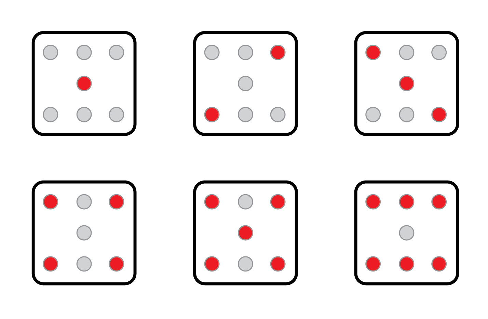
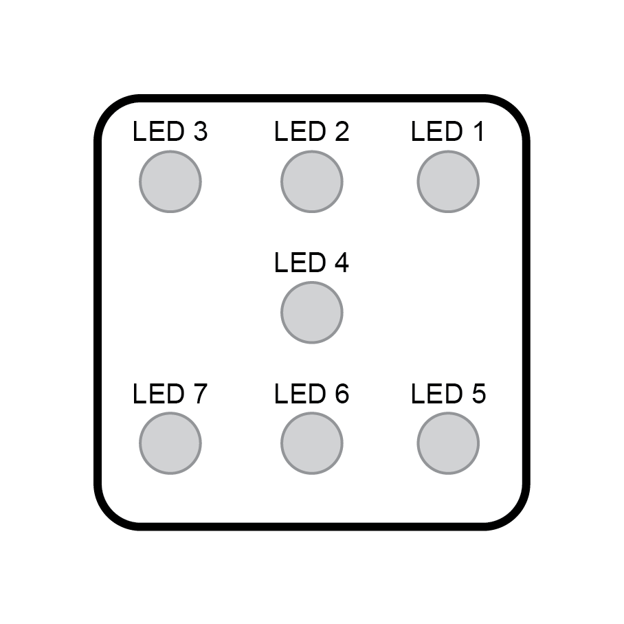
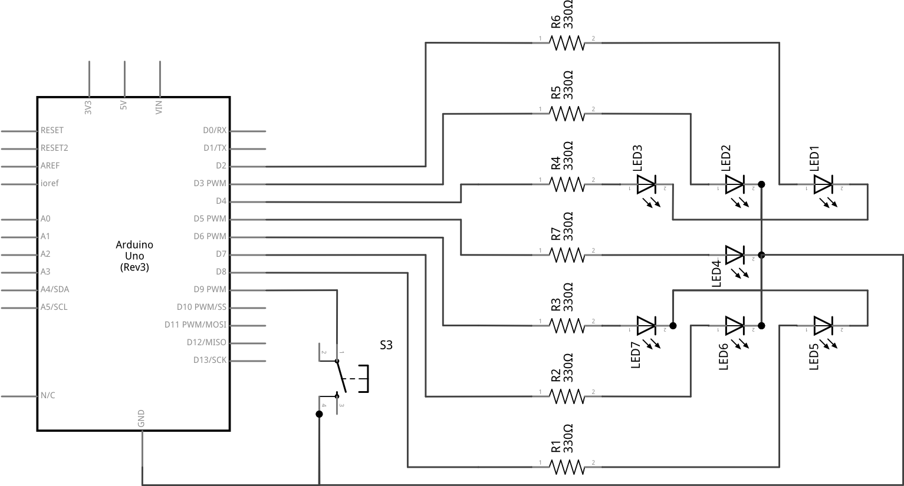
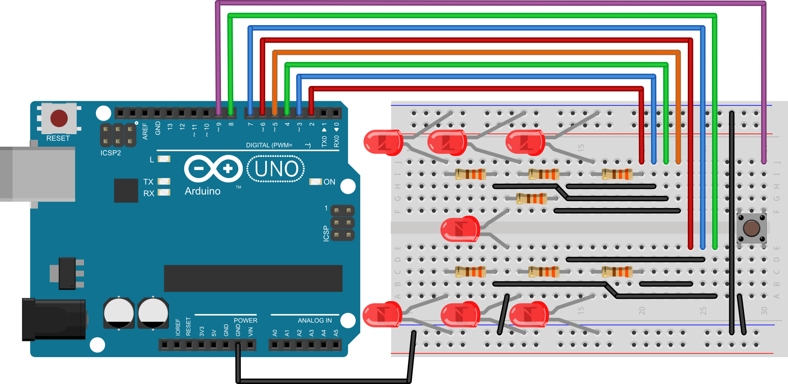

Poglavlje 5
Zadatak 23
Na mikrokontroler spojite sedam svjetlećih dioda i jedno tipkalo. Svjetleće diode spojite tako da izgledaju kao točkice na kockici za igre na sreću. Napišite program koji će na svjetlećim diodama prikazivati brojeve od 1 do 6 kako su oni inače prikazani na kockici. Promjena i nasumičnost brojeva postiže se na način da dok korisnik drži tipkalo program odbrojava od 1 do 6 velikom brzinom i prikazuje to na LED diodama. Kada korisnik otpusti tipkalo brojanje se zaustavlja i posljednji broj ostaje prikazan na svjetlećim diodama. Sljedeća slika prikazuje kombinacije mogućih dobivenih brojeva.
SLIKA 1:

Prazni kružići prikazuju isključenu svjetleću diodu, dok crveni kružići prikazuju uključenu svjetleću diodu.
Nazivi dioda u programu i na shemi prikazani su na sljedećoj slici.
SLIKA 2:

SHEMA:

EKSPERIMENTALNA PLOČICA:

RJEŠENJE:
int led1 = 2; //definiraj led1 = 2 int led2 = 3; //definiraj led2 = 3 int led3 = 4; //definiraj led3 = 4 int led4 = 5; //definiraj led4 = 5 int led5 = 6; //definiraj led5 = 6 int led6 = 7; //definiraj led6 = 7 int led7 = 8; //definiraj led7 = 8 int tipkalo = 9; //definiraj tipkalo = 9 int brojac = 0; //definiraj brojač = 0 void setup() { pinMode(led1, OUTPUT); //postavi izvod led1 kao izlazni pinMode(led2, OUTPUT); //postavi izvod led2 kao izlazni pinMode(led3, OUTPUT); //postavi izvod led3 kao izlazni pinMode(led4, OUTPUT); //postavi izvod led1 kao izlazni pinMode(led5, OUTPUT); //postavi izvod led2 kao izlazni pinMode(led6, OUTPUT); //postavi izvod led3 kao izlazni pinMode(led7, OUTPUT); //postavi izvod led3 kao izlazni pinMode(tipkalo, INPUT_PULLUP); //postavi izvod tipkalo kao ulazni } void iskljucisveled() { digitalWrite(led1, LOW); //isključi LED diodu 1 digitalWrite(led2, LOW); //isključi LED diodu 2 digitalWrite(led3, LOW); //isključi LED diodu 3 digitalWrite(led4, LOW); //isključi LED diodu 4 digitalWrite(led5, LOW); //isključi LED diodu 5 digitalWrite(led6, LOW); //isključi LED diodu 6 digitalWrite(led7, LOW); //isključi LED diodu 7 } void loop() { if (digitalRead(tipkalo)==LOW) { //ukoliko je tipkalo pritisnuto brojac=brojac+1; //dodaj 1 na brojač if (brojac>6) { //ako je brojač veći od 6 brojac=1; //vrati brojač na 1 } } if (brojac==1) { //ukoliko je brojač = 1 iskljucisveled(); //isključi sve LED diode digitalWrite(led4, HIGH); //prikaz broja 1 } else if (brojac==2) { //ukoliko je brojač = 2 iskljucisveled(); //isključi sve LED diode digitalWrite(led1, HIGH); //prikaz broja 2 digitalWrite(led7, HIGH); //prikaz broja 2 } else if (brojac==3) { //ukoliko je brojač = 3 iskljucisveled(); //isključi sve LED diode digitalWrite(led3, HIGH); //prikaz broja 3 digitalWrite(led4, HIGH); //prikaz broja 3 digitalWrite(led5, HIGH); //prikaz broja 3 } else if (brojac==4) { //ukoliko je brojač = 4 iskljucisveled(); //isključi sve LED diode digitalWrite(led1, HIGH); //prikaz broja 4 digitalWrite(led3, HIGH); //prikaz broja 4 digitalWrite(led5, HIGH); //prikaz broja 4 digitalWrite(led7, HIGH); //prikaz broja 4 } else if (brojac==5) { //ukoliko je brojač = 5 iskljucisveled(); //isključi sve LED diode digitalWrite(led1, HIGH); //prikaz broja 5 digitalWrite(led3, HIGH); //prikaz broja 5 digitalWrite(led4, HIGH); //prikaz broja 5 digitalWrite(led5, HIGH); //prikaz broja 5 digitalWrite(led7, HIGH); //prikaz broja 5 } else if (brojac==6) { //ukoliko je brojač = 6 iskljucisveled(); //isključi sve LED diode digitalWrite(led1, HIGH); //prikaz broja 6 digitalWrite(led2, HIGH); //prikaz broja 6 digitalWrite(led3, HIGH); //prikaz broja 6 digitalWrite(led5, HIGH); //prikaz broja 6 digitalWrite(led6, HIGH); //prikaz broja 6 digitalWrite(led7, HIGH); //prikaz broja 6 } else { //ukoliko je brojač = 0 iskljucisveled(); //isključi sve LED diode } }